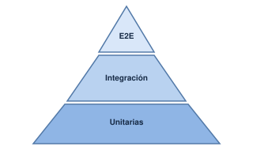
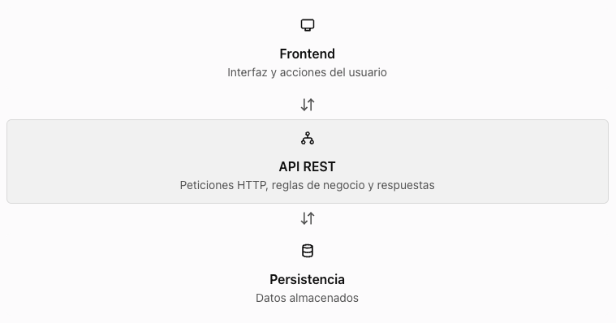

UD2. Testing. Encontrar problemas antes de producción
¿Por qué necesitamos el testing?
✅ Fundamentos y testing automatizado
Imaginemos que desarrollamos una aplicación para gestionar pedidos. El código calcula el importe multiplicando el precio por la cantidad de productos. Si el usuario compra tres unidades de un producto que cuesta 10€, el resultado debería ser 30€.
Pero, ¿qué ocurre si la cantidad es negativa? ¿y si es cero? ¿y si llega el texto tresen lugar de un número?
El código puede ejecutarse sin producir un error técnico, y aún así, generar un resultado incorrecto desde el punto de vista de negocio.
La idea que debemos entender es esta:
Que un programa se ejecute sin errores no significa que se comporte correctamente ni que sea seguro.
El testing consiste en comprobar de manera sistemática si un sistema se comporta como esperamos bajo determinadas condiciones
Error humano, defecto y fallo
Es útil distinguir tres conceptos:
- Error humano: una persona toma una decisión equivocada o escribe una instrucción incorrecta.
- Defecto: el error queda incorporado al código, al diseño o a la configuración.
- Fallo: el sistema muestra un comportamiento incorrecto cuando se ejecuta en determinadas condiciones.
Ejemplo: Un desarrollador olvida comprobar que la cantidad de un pedido sea positiva. Ese olvido es un error humano; la ausencia de validación es un defecto; aceptar un pedido con cantidad negativa es un fallo observable.
Verificacion y validación
Aunque estén relacionadas, responden a preguntas distintas:
| Concepto | Pregunta | Ejemplo |
|---|---|---|
| Verificación | ¿Estamos construyendo el producto de acuerdo con las especificaciones? | Comprobar que una función calcula el importe correctamente. |
| Validación | ¿Estamos construyendo el producto adecuado para la necesidad real? | Comprobar que las reglas de pedidos responden a las necesidades del negocio. |
Una aplicación puede superar pruebas técnicas y cumplir literalmente una especificación, pero esa especificación puede ser insuficiente. Por ejemplo, el sistema puede calcular bien los importes y no contemplar que un usuario no autorizado intente modificar un pedido.
Tipos de pruebas: la pirámide de testing

Pruebas unitarias: comprueban una unidad pequeña de código, como una función.
Pruebas de integración: comprueban que varios componentes funcionan correctamente juntos.
Pruebas E2E (end-to-end): verifican un flujo completo desde el punto de vista del usuario, por ejemplo, iniciar sesión y consultar un pedido.
¿Por qué no hacer solamente pruebas E2E? Porque suelen implicar más componentes, son más lentas y, cuando fallan, puede resultar más difícil localizar la causa. Las pruebas unitarias son normalmente más rápidas y específicas.
Diseño de casos de prueba
Antes de enseñar una herramienta, conviene enseñar a pensar como tester. Automatizar una prueba mal diseñada solo permite repetir rápidamente una comprobación insuficiente.
Un caso de prueba describe una situación concreta que queremos comprobar, incluyendo las condiciones iniciales, los datos utilizados y el resultado esperado.
| Elemento | Significado |
|---|---|
| Identificador | Código único del caso de prueba |
| Entrada | Datos que recibe la función |
| Resultado esperado | Comportamiento correcto según los requisitos |
| Resultado real | Lo que sucede al ejecutar el programa |
| Estado | Superada o fallida |
| Evidencia | Salida de la herramienta, registro o captura |
Ejemplo de requisito:
El sistema sólo debe aceptar cantidades enteras positivas para un pedido.
| Caso | Entrada | Resultado esperado |
|---|---|---|
| CP01 | 3 |
Aceptar |
| CP02 | 1 |
Aceptar |
| CP03 | 0 |
Rechazar |
| CP04 | -2 |
Rechazar |
| CP05 | 1.5 |
Rechazar |
| CP06 | "tres" |
Rechazar |
¿Qué otras entradas se os ocurren?
¿Qué pasaría con null, un valor excesivamente grande, o una cadena vacía?
Primer contacto con Vitest
¿Qué es Vitest?
Vitest es un framework de testing para JavaScript. Proporciona herramientas para organizar pruebas, ejecutar funciones, comparar resultados y mostrar qué comprobaciones han pasado o fallado.
No sustituye al código de la aplicación. Lo ejecuta en el contexto de las pruebas y permite comprobar si su comportamiento coincide con lo esperado.
En esta unidad utilizaremos tres elementos:
test()oit(): define una prueba.expect(): expresa qué resultado esperamos.
Un matcher, como toBe(): compara el resultado real con el esperado.
Por ejemplo:
import { test, expect } from 'vitest';
test('dos más dos es cuatro', () => {
expect(2 + 2).toBe(4);
});La prueba pasa si la expresión evaluada produce el resultado esperado. Si se cambia el 4 por 5, la prueba falla.
Preparar el proyecto
Como requisito necesitamos tener Node.js instalado y VSCode
En el terminal:
mkdir ud2-testing
cd ud2-testing
npm init -y
npm install --save-dev vitestEn el archivo package.json, añade "type": "module" y el script test. Conserva las dependencias que haya generado npm.
Una configuración mínima sería:
{
"type": "module",
"scripts": {
"test": "vitest run"
},
"devDependencies": {
"vitest": "^3.0.0"
}
}La versión del ejemplo es ilustrativa: al instalar Vitest, es preferible conservar la versión que npm haya instalado en lugar de copiar una versión antigua a mano. No sustituyas el
package.jsoncompleto si el proyecto ya contiene otras dependencias.
Crea los archivos
Vamos a formar esta estructura:
ud2-testing/
├── package.json
├── pedido.js
└── pedido.test.jspedido.js
export function validarCantidad(cantidad) {
return Number.isInteger(cantidad) && cantidad > 0;
}pedido.test.js
import { test, expect } from 'vitest';
import { validarCantidad } from './pedido.js';
test('acepta una cantidad positiva', () => {
expect(validarCantidad(3)).toBe(true);
});
test('rechaza una cantidad negativa', () => {
expect(validarCantidad(-2)).toBe(false);
});Ejecuta:
npm run testVitest debe mostrar dos pruebas superadas.
El archivo .test.js contiene las comprobaciones, mientras que pedido.js contiene la funcionalidad que queremos verificar.
El patrón Arrange-Act-Assert
Una buena prueba suele tener tres fases:
Arrange: preparar los datos y las condiciones.
Act: ejecutar la funcionalidad.
Assert: comprobar el resultado.
En nuestra prueba:
test('acepta una cantidad positiva', () => {
// Arrange
const cantidad = 3;
// Act
const resultado = validarCantidad(cantidad);
// Assert
expect(resultado).toBe(true);
});❌ Pruebas negativas y límites de entrada
Pruebas positivas frente a pruebas negativas
Una prueba positiva comprueba que el sistema acepta una entrada válida y produce el resultado esperado.
Una prueba negativa verifica que el sistema rechaza una entrada no válida o responde de forma controlada ante una situación inesperada.
| Tipo | Entrada | Comportamiento esperado |
|---|---|---|
| Positiva | Un precio de 80 € | Calcula el resultado correcto. |
| Positiva | Un cliente de tipo premium | Aplica la regla de descuento correspondiente. |
| Negativa | Un precio negativo | Rechaza la entrada. |
| Negativa | Un precio como texto | Rechaza la entrada si se exige un número. |
| Negativa | Un tipo de cliente desconocido | No aplica reglas por defecto sin control. |
| Negativa | NaN o Infinity |
Rechaza valores que no representan importes válidos. |
Una prueba negativa o no tiene por qué terminar en una excepción. Puede comprobar que la función devuelve un error controlado, que rechaza la operación o que responde con un código HTTP apropiado. Lo importante es que el comportamiento sea el esperado.
Cómo elegir casos de prueba sin probar todas las posibilidades
No es viable probar todas las entradas posibles. Para seleccionar casos útiles, vamos a utilizar dos técnicas.
Partición de equivalencia. Agrupamos entradas kque deberían comportarse de la misma manera y elegimos representantes de cada grupo.
Por ejemplo, si una aplicación acepta importes iguales o superiores a cero:
- Importes válidos:
0, 25, 100. - Importes negativos:
-1, -100. - Valores que no son números:
"25", null, undefined. - Valores numéricos no finitos:
NaN, Infinity.
No hace falta probar todos los valores que comparten la misma regla, aunque conviene elegir suficientes ejemplos para detectar errores relevantes.
Análisis de valores límite. Comprobamos especialmente los extremos de una regla, porque es frecuente que los defectos aparezcan al usar operadores incorrectos.
Si el descuento se aplica a partir de 100€, los casos importantes son:
99.99: no debe aplicarse100: debe aplicarse100.01: debe aplicarse
Ese análisis ayuda a detectar, por ejemplo, que alguien haya escrito > en lucar de >=.
Las aserciones también comprueban errores
Con Vitest, podemos verificar tanto el resultado correcto como el rechazo de una entrada.
import { expect, test } from "vitest";
test("rechaza un importe negativo", () => {
expect(() => calcularTotal(-10, "standard"))
.toThrow();
});En este ejemplo no comprobamos solamente que algo falla: especificamos que la función debe lanzar una excepción. En otros diseños, la función podría devolver un resultado de error y la aserción sería distinta.
La prueba debe reflejar el contrato que hemos definido para la función, no adaptarse a cualquier comportamiento que produzca el código.
🔗 API testing y pruebas E2E
API testing
¿Qué estamos probando?
En una aplicación web podemos comprobar una funcionalidad desde distintos niveles.

Una prueba unitaria comprueba una parte pequeña del código, como una función de cálculo. Una prueba de API envía una petición al backend y verifica su respuesta. Una prueba E2E recorre la aplicación desde la perspectiva del usuario, normalmente a través del navegador.
Las pruebas de API pueden detectar defectos aunque la interfaz todavía no esté terminada.
¿Qué debe comprobar una prueba de API?
No basta con comprobar que el servidor responde. Una API puede devolver 200 OK y, aún así, entregar datos incorrectos o incumplir reglas de negocio.
En las pruebas tendremos en cuenta cuatro dimensiones:
| Dimensión | Qué comprobamos |
|---|---|
| Código HTTP | Si el servidor comunica el resultado esperado. |
| Cuerpo de la respuesta | Si contiene los datos y la estructura correctos. |
| Reglas de negocio | Si la operación respeta los requisitos de la aplicación. |
| Robustez | Si las entradas inválidas se rechazan de forma controlada. |
Recordando algunos códigos HTTP:
| Código | Significado habitual |
|---|---|
200 OK |
La petición se ha procesado correctamente. |
201 Created |
Se ha creado un recurso. |
204 No Content |
La operación ha tenido éxito y no devuelve contenido. |
400 Bad Request |
La petición es inválida. |
401 Unauthorized |
Faltan credenciales válidas o no se han aceptado. |
403 Forbidden |
La operación está prohibida para ese cliente. |
404 Not Found |
El recurso solicitado no se encuentra o no se expone. |
500 Internal Server Error |
Se ha producido un error interno no controlado o genérico. |
Los códigos exactos dependen del contrato de la API. Por ejemplo, una petición inválida puede responder con
400o422, según el diseño adoptado.
Desde seguridad, un código HTTP por sí solo no demuestra que el comportamiento sea seguro: también debemos comprobar el contenido de la respuesta, los datos afectados y si se han revelado detalles innecesarios.